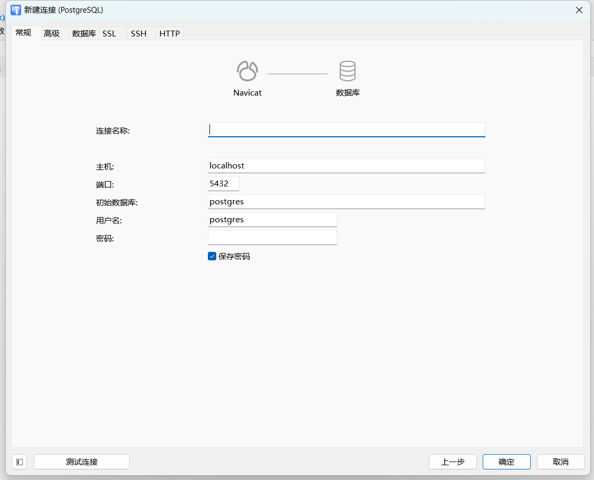
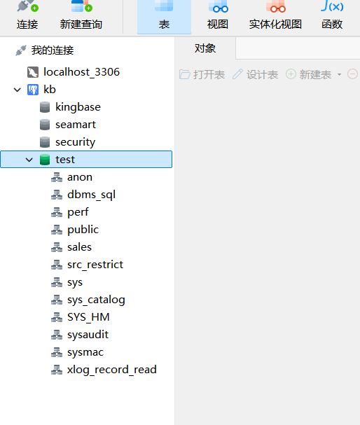
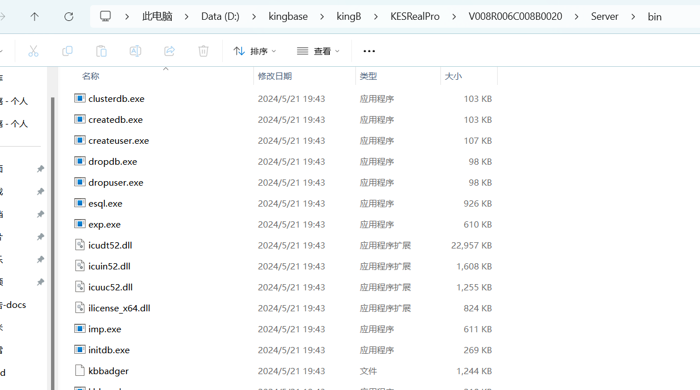
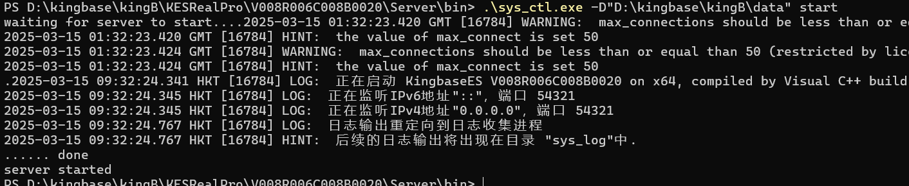

连接数据库
本节目录
使用 Navicat 连接金仓数据库
接下来，我们将介绍如何使用 Navicat 这一强大的数据库连接工具来连接金仓数据库。请确保您已经安装了 Navicat 并激活了正版授权，以便顺利执行以下步骤。
背景知识
如文章：https://www.zhihu.com/question/582960448 所介绍的，金仓可以视作一个闭源的 PostgreSQL，因此我们使用 Navicat 连接金仓数据库时，需要使用 PostgreSQL 的连接方式。
连接步骤
- 打开 Navicat，点击左上角的
连接按钮，选择PostgreSQL，之后点击右下角的下一步。
- 在弹出的窗口中，填写连接信息，包括：

连接名称：自定义，用于标识该连接。主机：由于是本机部署，因此填写localhost。端口：金仓数据库默认端口为54321。我们之前的环境搭建章节也是填写的这个端口。初始数据库：填写test，这是金仓数据库的默认数据库，之前也配置过。用户名：填写system，这是金仓数据库的默认用户名，之前也配置过。密码：之前配置的123456。
- 然后我们需要先点击左下角的
测试连接按钮，确保连接信息正确。
- 测试连接成功后，点击右下角的
确定按钮，完成连接的创建。 - 若连接不成功，可以尝试按照常见 Q & A 中的方法解决。
完成标志
双击 / 右键点击 Navicat 左侧的 连接名称，如果能够进行展开，并看到其内的 test 数据库和其它的系统自带的数据库，则说明连接成功。如下图：

PS：图里面的 seamart 数据库是后续建立的，没有是正常情况。
常见 Q & A
因为数据库未打开，连接失败
在连接过程中，可能出现连接失败，这时候可能是因为数据库还未打开，如果出现这种情况，请先打开金仓数据库，再重新尝试连接。
解决方案如下：
- 到金仓数据库的安装路径内，如：

- 选择
Server这个快捷方式，进入到Server的bin目录，如：  - 打开命令行(我使用的是
Powershell)并进入到bin目录，如：
- 输入命令：
./system_ctl.exe -D 你的数据目录 start，这里提到的你的数据目录，就是在之前环境配置里配过的内容，如果用的是默认的，那就在你的安装目录里的data目录内。如图所示：
预期如下所示：

然后，回到 Navicat，重新点击 测试连接，如果连接成功，则可以正常连接金仓数据库。